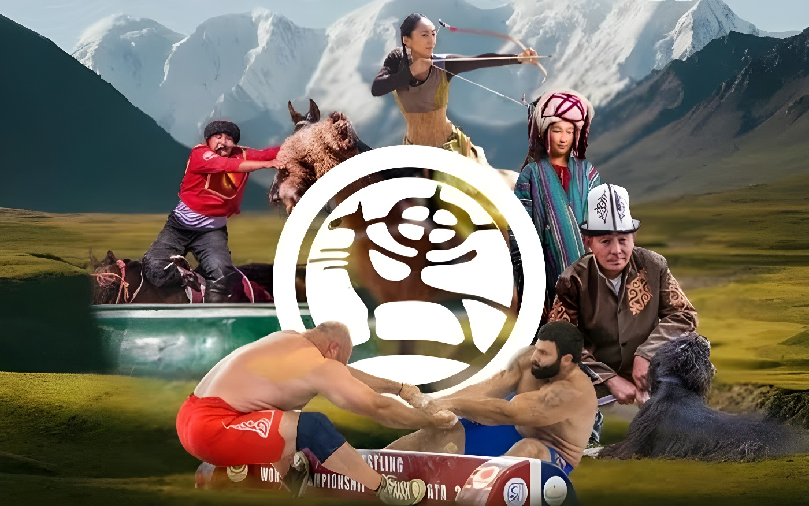

Du 31 août au 6 septembre 2026, Bichkek puis les rives du lac Issyk-Koul ont accueilli la sixième édition des Jeux mondiaux nomades, doublée d'un symbole fort : douze ans après leur création, ces « Olympiades des steppes » reviennent sur le sol qui les a vues naître. Quelque 3 000 athlètes venus de plus d'une centaine de pays s'y sont affrontés dans des disciplines équestres, des luttes traditionnelles et des jeux de stratégie hérités des peuples nomades d'Asie centrale, sous le regard de nombreux chefs d'État réunis à Bichkek pour le sommet de l'Organisation de coopération de Shanghai.
La cérémonie d'ouverture s'est tenue le 31 août, jour de la fête de l'indépendance kirghize, dans la toute nouvelle Bishkek Arena — le plus grand stade d'Asie centrale, inauguré pour l'occasion. Selon le média régional The Diplomat, la cérémonie a duré près de sept heures, mêlant défilé des délégations, discours du président Sadyr Japarov et un spectacle réunissant environ 3 000 artistes et 300 cavaliers retraçant l'histoire du peuple kirghize et des civilisations nomades. Le choix du calendrier n'a rien d'anodin : l'ouverture des Jeux a coïncidé avec le sommet de l'Organisation de coopération de Shanghai, qui a réuni à Bichkek une vingtaine de chefs d'État, dont Vladimir Poutine, Narendra Modi et Xi Jinping.
Après cette parenthèse politique, l'essentiel des compétitions s'est déplacé du 1er au 6 septembre vers la région d'Issyk-Kul, à environ trois heures de route de la capitale : l'hippodrome et le complexe sportif de Tcholpon-Ata pour les épreuves équestres et les luttes, et les vallées de la gorge de Kyrchyn pour le tir à l'arc, la chasse au vol et le village ethnique. La clôture est prévue ce dimanche 6 septembre à l'hippodrome de Tcholpon-Ata, avec feux d'artifice et remise symbolique du flambeau à la prochaine ville hôte.
Au cœur du programme trône le kok-boru (ou ulak-tartych), un jeu équestre où deux équipes se disputent la dépouille d'une chèvre pour la déposer dans le camp adverse : inscrit par l'UNESCO sur sa liste du patrimoine culturel immatériel dès 2017, c'est le sport le plus spectaculaire et le plus suivi des Jeux. À ses côtés, l'er enich met aux prises deux cavaliers qui tentent de se désarçonner mutuellement, tandis que le tyiyn enmei consiste à ramasser des pièces au sol, sans mettre pied à terre, à pleine vitesse.
Le programme comprend également plusieurs styles de lutte traditionnelle (alysh, kurosh, sambo, la « grande lutte nomade »), des concours de tir à l'arc monté, des compétitions de chasse au vol avec des aigles royaux (salburun) ainsi que des jeux de plateau hérités des steppes, à l'image du toguz korgool, un jeu de stratégie proche du mancala. Cette diversité illustre l'ambition affichée par les organisateurs : transformer un rassemblement régional en une vitrine mondiale des sports et savoir-faire nomades, dans la lignée de la reconnaissance accordée par l'UNESCO à l'ensemble du projet des Jeux en 2021.
Première édition à Tcholpon-Ata : 583 athlètes de 19 pays, 10 disciplines. Le président Almazbek Atambaïev en fait un projet d'unité nationale et de diplomatie culturelle turcique.
Deux nouvelles éditions à Tcholpon-Ata : l'audience internationale s'élargit, jusqu'à plus de 2 000 athlètes et 82 pays en 2018, pour 37 disciplines.
Première édition hors du Kirghizistan : Iznik, en Turquie, accueille plus de 3 000 athlètes venus de 102 pays.
Astana (Kazakhstan) organise une édition très institutionnelle. C'est lors de sa cérémonie de clôture qu'est annoncé le retour des Jeux au Kirghizistan pour 2026.
Le fondateur du concept, Askhat Akibaev, cède officiellement les droits de propriété intellectuelle des Jeux à l'État kirghiz.
Sixième édition : ouverture à Bichkek, compétitions et clôture à Tcholpon-Ata, sur les rives de l'Issyk-Koul.
L'idée des Jeux mondiaux nomades naît en 2011-2012, portée par le concepteur Askhat Akibaev puis reprise à son compte par le président de l'époque, Almazbek Atambaïev, qui la présente au sommet du Conseil turcique de Bichkek en 2012. Pour ce petit pays d'Asie centrale, dépourvu de puissance économique ou militaire régionale, l'enjeu est clair : se doter d'un instrument d'influence culturelle capable de rivaliser, à sa mesure, avec les grandes puissances voisines que sont la Chine et la Russie. Le pari est réussi dès la première édition de 2014, qui installe le Kirghizistan comme berceau incontesté de cette manifestation.
Après avoir voyagé en Turquie (2022) puis au Kazakhstan (2024) — deux éditions qui ont considérablement professionnalisé l'événement, notamment sous l'impulsion d'Astana, qui a cherché à en rapprocher le format de celui des Jeux olympiques — les Jeux reviennent donc sur leur terre d'origine en 2026, dans un format annoncé comme le plus vaste à ce jour : 43 disciplines, contre 37 en 2018, et un nombre de délégations qui aurait dépassé la centaine, d'après les chiffres communiqués par les organisateurs.
« Nous avons prouvé, à nous-mêmes comme au monde, qu'un petit pays peut réussir quelque chose de mondial. »
— Askhat Akibaev, fondateur du concept des Jeux mondiaux nomades, cité par Radio Free Europe/Radio LibertyUne partie de cette réussite tient aussi à la reconnaissance internationale accordée à l'événement : en 2021, l'UNESCO a inscrit le programme « Jeux nomades, redécouvrir le patrimoine, célébrer la diversité » sur son Registre des meilleures pratiques de sauvegarde, au titre de la convention de 2003 sur le patrimoine culturel immatériel — une distinction que la Kok-boru elle-même avait obtenue séparément dès 2017. À Ornok, dans la région d'Issyk-Kul, seize nouvelles sculptures inaugurées à l'occasion de l'édition 2026 doivent perdurer après le départ des athlètes, comme trace matérielle durable de cette édition.
| Édition | Année | Pays hôte | Participation |
|---|---|---|---|
| Ire | 2014 | Kirghizistan | 583 athlètes, 19 pays |
| IIe – IIIe | 2016 / 2018 | Kirghizistan | ~2 000 athlètes, 82 pays |
| IVe | 2022 | Turquie (Iznik) | ~3 000 athlètes, 102 pays |
| Ve | 2024 | Kazakhstan (Astana) | ~2 500 athlètes, 89 pays |
| VIe | 2026 | Kirghizistan | ~3 000 athlètes, 100+ pays |
En douze ans, les Jeux mondiaux nomades sont passés d'une initiative locale, pensée pour souder une nation encore jeune, à un rendez-vous international disputé par plusieurs capitales d'Asie centrale. Leur retour au Kirghizistan en 2026, sous les yeux des dirigeants réunis pour le sommet de l'Organisation de coopération de Shanghai, illustre la manière dont Bichkek a su transformer un patrimoine populaire — courses de chevaux, luttes et jeux de plateau hérités des steppes — en un outil de rayonnement diplomatique difficile à obtenir par d'autres moyens pour un pays de cette taille. Reste à savoir si cette effervescence, une fois les derniers cavaliers rentrés chez eux, se traduira par un ancrage durable de ces pratiques auprès des jeunes générations kirghizes, ou si elle demeurera avant tout un rendez-vous bisannuel tourné vers l'extérieur.